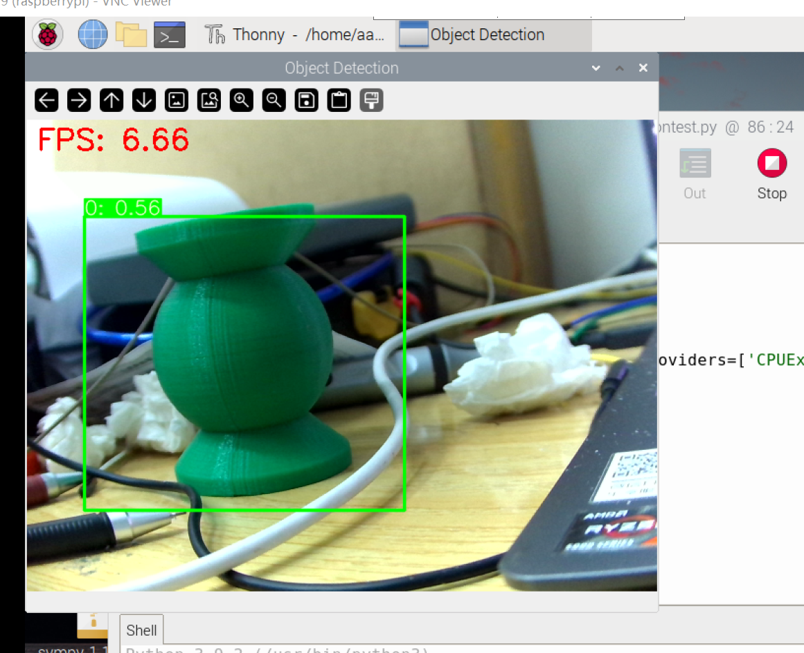
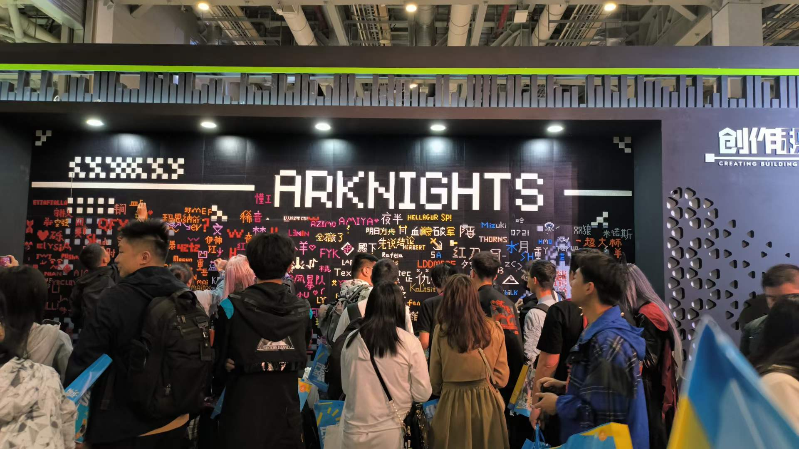
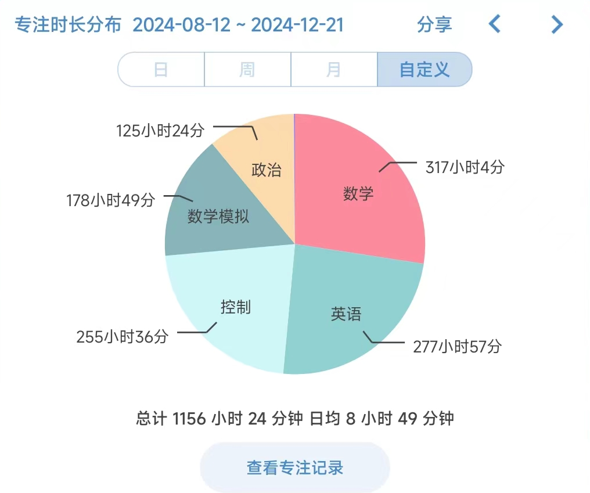

25考研初试已经过去了，感觉这大半年估计沉没了，但这半年是摸鱼过的，感觉没算太亏（），这大半年来感觉并没有恢复专注学习的能力，或许本来就没有了吧，24年的试题除了数学，给了我太多的错觉了，没对答案，估计大半是寄了，把未知留给未来吧，被出题老头彻底弄服气，确实比不过其他人。
好像这一年，或许也不是那么不堪？
前半年在折腾树莓派，对linux有点了解，写了点自认为稍微有点意义的东西，搞了搞简单地识别宝物逻辑，把总线舵机稍微搞搞，成功地用成了普通的pwm波舵机，原本目的是将舵机实际位置直接传入单片机，拒绝反复烧录调参，可惜还是摆烂不想搞。改了改比赛的pcb，总还是给大伙留下来了一点什么东西，侥幸搞了个一等奖，感觉最大的意义是能把自己学到的一点浅薄东西能够写下来，给未来的自己省下些时间排除一些奇怪的问题。这半年还补以前摆烂不选课欠的学分，比起正常人多上了一节半课，回寝室更摆了，天天打土豆，成功打了个全成就，给后面埋伏笔了。

也去了趟第一次也应该是最后一次方舟的展，人很挤，但也挺快乐，真正在工大找到组织了，快乐地爆了一堆米，可惜仍有不愉快的地方是丢了身份证，-30。我真是傻到五一去外滩人挤人。今年CP没去，如果明年顺利地上岸，弥补下这次的遗憾吧。

算是从期末考试考完，打拉塔恩打自闭了，才有意识到了自己该好好准备考研了，但仍是不紧不慢，慢慢悠悠地复习，看了那些网上的经验贴，尤其80天速通，一直觉得自己时间很宽裕，而且起初也没有目标，没有考虑自己的实际情况，高数是真的一点不会，自控是被老师捞，七月份在校磨磨唧唧把高数下和概率论看完了，实际到后面发现自己一点都不会，级数求和二元分布都不会，线代也照样不会做。到七月末回了家，效率一天比一天低，内耗一天比一天高，作息自动的朝着白天睡觉，晚上睡不着焦虑。
八月下回校情况稍微好点，后面些天学习时长能稍微保持一点了，但各种身体问题出现，外界环境这些问题，还有些进度飞快的大佬，焦虑，彻底进入了不好好关注基础，模拟卷一张比一张烂，但也不肯停下来，一直以状态问题来麻痹自己，这就留下了巨大的坑。下面是摸了半年鱼的学习时长，大半都是躲在舒适圈自我麻痹的垃圾时间，但战斗爽。政治也是能背下来了，可惜今年肖四拉了大胯。

也感谢学校能够提供养贤府二楼这个自习场所，给我这个懒狗有了一个不去图书馆的理由，面向吃饭型学习，虽然环境确实不怎么样，没有空调，没有插座，三楼唱歌，电路实验，但至少是个地方给我让我学进去一点，还能不用搬书。也感谢坐在周围的朋友的鼓励和一同奋斗。也感谢听泉，没脸鉴车，老厮等给我这些天的快乐。
24这一整年比起前三年的浑浑噩噩待在寝室里还是好多了，或许还是太迟了，考研需要补的坑太大了，准备考研貌似占据原本无所事事的时间，但烂完的事实导致这个稳态变得更严重了，所以还是只能从现在开始补偿过去了，混点技术，但愿春招能顺顺利利地找个工作得了，也该走出去了，当然如果能进复试是再好不过啦，能够成功捕到大鸟是多么美妙的一件事啊。